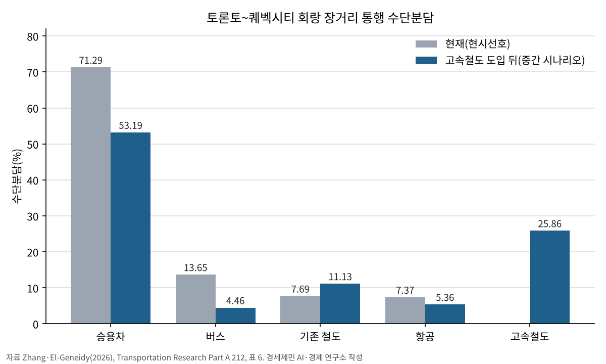
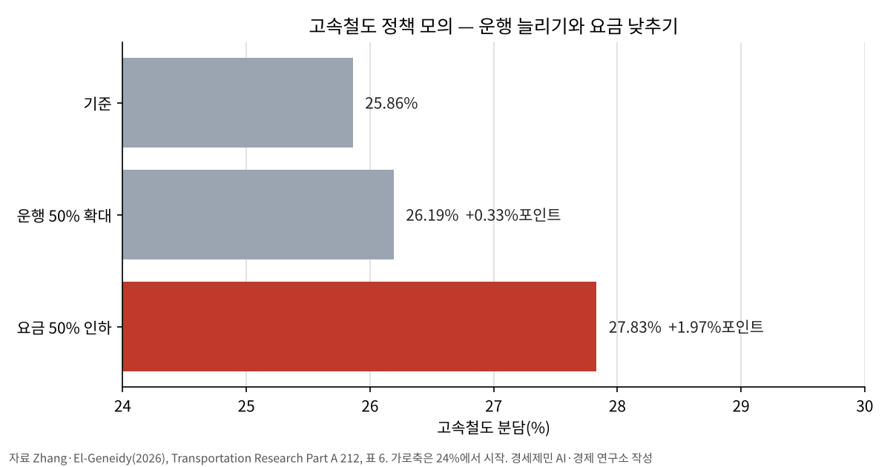

[철도] 고속철도 승객, 운행보다 요금에 더 움직인다…승용차는 잘 안 옮겨
캐나다 개통 전 설문 6813명·같은 회랑 1989년 업무 통행자 2769명, 두 연구 모두 요금 쪽 반응이 커
이탈리아 고속도로 52개 구간, 고속철도 개통 뒤에도 통행 줄지 않아…연구 93편 메타분석도 같은 방향
AI경제저널=김갑봉 기자 | 고속철도를 놓으면 사람들은 차를 두고 기차를 탈까. 캐나다가 이 물음 앞에 서 있다.
국제 학술지에 실린 연구 넷을 나란히 놓았다. 고속철도 승객은 운행 횟수보다 요금에 더 크게 움직였다. 승용차는 고속철도가 들어와도 잘 옮겨 오지 않았다.
1000km 고속철도, 수요가 관건
캐나다 연방정부는 2025년 2월 토론토와 퀘벡시티를 잇는 고속철도 Alto 사업을 발표했다. 약 1000km 구간을 최고 시속 300km로 달리고 일곱 도시에 선다.
사업자는 건설비를 600억~900억 캐나다달러로, 이용객을 2055년 연 2400만 명으로 잡았다. 캐나다 의회예산처는 10월 1일 건설비가 750억~1130억 캐나다달러에 이를 수 있다는 추정을 냈다.
철도 사업 수요는 개통 초기 실제보다 평균 20~60% 높게 잡혔다는 선행 연구(Flyvbjerg, 2007)가 있다.
북미는 지역 간 통행의 80% 넘게를 승용차가 맡는 시장이다. 캐나다 연구진은 그래서 고속철도 수요를 가늠할 근거가 적다고 짚었다.
개통 전 6813명, 요금 인하가 6배
캐나다 퀸스대 장위 박사와 맥길대 아흐메드 엘게네이디 교수는 2025년 10월 역이 들어설 여섯 권역 주민 6813명에게 장거리 통행을 물었다. 논문은 국제 학술지 『교통연구 A』 212권에 실렸다.
지난 1년 장거리 통행은 승용차가 71.29%다. 고속철도가 생기면 타겠다는 응답은 97.71%에 이른다.
연구진은 실제 통행 기록으로 시간과 요금 민감도를 먼저 잡고, 설문 응답으로 고속철도 선호를 얹었다. 응답자는 통행시간 1시간을 31.5캐나다달러로 쳤다. 운행 횟수 계수는 통계적으로 유의하지 않았다.

중간 시나리오에서 고속철도는 회랑 통행의 25.86%를 가져간다. 승용차 분담은 71.29%에서 53.19%로 내려간다.
정책 모의에서 운행을 50% 늘리면 고속철도 분담은 0.33%포인트 오른다. 요금을 절반으로 낮추면 1.97%포인트 올라 6배 가까운 효과가 난다.

짧은 구간은 거의 움직이지 않는다. 퀘벡시티~트루아리비에르는 고속철도가 들어와도 승용차가 91%, 몬트리올~트루아리비에르는 84%가 남는다.
연구진은 집 앞에서 바로 떠나는 승용차의 편리함을 까닭으로 들었다. 결과는 예측이 아닌 민감도 분석으로 읽으라고 적었다.
1989년 같은 회랑, 요금 탄력성 −1.12
같은 회랑을 실제 통행 기록으로 따진 연구가 있다. 찬드라 바트 미국 매사추세츠대 교수(현 텍사스대)는 1995년 『교통연구 B』에 토론토~몬트리올 업무 통행자 2769명의 수단선택을 실었다.
자료는 캐나다 국영 VIA 레일의 1989년 조사다. 승용차·철도·항공 셋을 견줬고, 업무 분담이 1%가 안 되는 버스는 뺐다.
대표 업무 통행자의 철도 요금 탄력성은 −1.121, 운행 횟수 탄력성은 0.205다. 요금 쪽 반응이 5배 넘게 크다.
이 연구에서는 운행 횟수 계수도 유의했다. 운행 횟수의 효과는 두 연구에서 갈린다.
철도 요금이 1% 오를 때 항공 선택 확률은 0.290%, 승용차는 0.220% 늘었다. 철도가 좋아질 때 승용차에서 옮겨 오는 몫이 항공보다 작다.
바트 교수는 흔히 쓰는 다항로짓 모형이 철도 이용을 높게 잡는다고 짚었다.
이탈리아 고속도로, 개통 뒤에도 안 줄었다
개통 뒤 실제 교통량을 본 연구도 같은 방향이다. 이탈리아 트렌토대 마티아 보르사티와 바르셀로나대 다니엘 알발라테는 2020년 『교통연구 A』에 유료 고속도로 52개 구간의 2001~2017년 통행을 분석했다.
고속철도 개통도, 2012년 새 운영사 NTV 진입도 인접 고속도로 통행을 줄이지 않았다. 고속철도 길이가 10%포인트 늘 때 인접 고속도로 경차량 주행 거리는 0.41% 늘었다.
연구진은 두 수단이 서로 경쟁하지 않는다고 결론지었다. 그 까닭으로 역까지 오가는 시간을 포함한 문전 시간을 들었다.
영국 리즈대 교통연구소 마크 워드먼 연구진은 2018년 연구 93편의 교차탄력성 1096개를 모아 메타분석했다. 철도 쪽 변화에 대한 승용차 수요의 교차탄력성은 평균 0.09였다.
도시 간 통행에서는 승용차와 철도가 더 가까운 대체재로 나왔다. 연구진은 설문(진술선호)에서 나온 값이 실제 행동에서 나온 값보다 크다고 밝혔다.
KTX 운임 10% 인하, 인천발 KTX

한국 고속철도는 연 1억 명 넘게 태운다. 국토교통부가 1월 14일 밝힌 2025년 고속철도 이용객은 KTX와 SRT를 합쳐 1억1870만 명이다. 코레일 집계로 KTX만 9271만 명이다.
9월 1일 KTX와 SRT가 하나로 운행하면서 KTX 운임은 평균 10% 내렸다. 서울~부산 운임은 5만9800원에서 5만4400원이 됐고, 주중 하루 좌석은 1만5000여 석 늘었다.
공정거래위원회가 8월 3일 코레일의 SR 인수를 승인한 뒤 나온 조치다.

12월 말 개통을 목표로 한 인천발 KTX는 연수구 옥련동 수인분당선 송도역에서 출발한다. 3.19km 연결선으로 경부고속선과 이어져 부산과 목포까지 2시간대에 닿는다.
다만 송도역에서 송도국제도시로 곧바로 잇는 대중교통은 모자라다는 지적이 나온다. 캐나다 연구진은 큰 도시 역은 도심과 환승 결절점에, 작은 도시 역은 차로 닿기 쉬운 교외에 두는 혼합형 역 입지를 권했다.
참고문헌
- Zhang, Y.(B.), El-Geneidy, A., 「Will high-speed rail compete for long-distance travel in a car-dependent society? Insights from a Canadian high-speed rail survey」, 『Transportation Research Part A: Policy and Practice』 212, 105143, Elsevier, 2026년 10월(온라인 2026년 7월 3일). https://doi.org/10.1016/j.tra.2026.105143
- Bhat, C.R., 「A heteroscedastic extreme value model of intercity travel mode choice」, 『Transportation Research Part B: Methodological』 29(6), 471~483쪽, 1995. https://doi.org/10.1016/0191-2615(95)00015-6
- Borsati, M., Albalate, D., 「On the modal shift from motorway to high-speed rail: evidence from Italy」, 『Transportation Research Part A: Policy and Practice』 137, 145~164쪽, 2020. https://doi.org/10.1016/j.tra.2020.04.006
- Wardman, M., Toner, J., Fearnley, N., Flügel, S., Killi, M., 「Review and meta-analysis of inter-modal cross-elasticity evidence」, 『Transportation Research Part A: Policy and Practice』 118, 662~681쪽, 2018. https://doi.org/10.1016/j.tra.2018.10.002
- Flyvbjerg, B., 「Cost overruns and demand shortfalls in urban rail and other infrastructure」, 『Transportation Planning and Technology』 30(1), 9~30쪽, 2007. https://doi.org/10.1080/03081060701207938
- 「Executive Summary – VIA Rail: Its Past, Its Present and the High-Speed Rail Project」, 캐나다 의회도서관 HillNotes, 2026.5.4.. https://hillnotes.ca/2026/05/04/executive-summary-via-rail-its-past-its-present-and-the-high-speed-rail-project/
- 「PBO says Alto high-speed rail could cost up to $113 billion, well above Ottawa's estimate」, The Hub, 2026.10.2.. https://thehub.ca/2026/10/02/pbo-says-alto-high-speed-rail-could-cost-up-to-113-billion-well-above-ottawas-estimate/
- 「Budget watchdog says Alto rail construction could cost more than Ottawa predicts」, 캐나다통신(Narcity 게재), 2026.10.1.. https://www.narcity.com/alto-rail-cost-could-exceed-ottawas-estimate-pbo
- 「코레일, 2025년 철도 이용객 1억 4600만 명 '역대 최고'」, 한국철도공사, 2026.1.14.. https://info.korail.com/info/selectBbsNttView.do?key=911&bbsNo=199&nttNo=26075
- 「2025년 고속철도 이용객은? 총 1억 1870만 명」, 정책주간지 K-공감(국토교통부), 2026.1.22.. https://gonggam.korea.kr/newsContentView.es?mid=a10214000000§ion_id=&news_id=8f0ca3bf-5acf-422c-b2e8-afd6805c6491
- 「Last year, KTX·SRT ridership reached 119 million… a twofold 'jump' in five years」, 경향신문, 2026.1.14.. https://www.khan.co.kr/en/article/202601141449597
- 「코레일, 9월 1일 KTX·SRT 통합…운임 평균 10% 인하」, 서울경제, 2026.8.5.. https://www.sedaily.com/article/20076098
- 「코레일-SR 기업결합 승인」, 공정거래위원회 보도자료(KDI 경제정보센터 전재), 2026.8.3.. https://eiec.kdi.re.kr/policy/materialView.do?num=285005
- 「오늘부터 KTX 운임 10% 인하…'통합 코레일' 공식 출범」, SBS, 2026.9.1.. https://news.sbs.co.kr/amp/news.amp?news_id=N1008730939
- 「이제 인천도 KTX 시대···부산·광주까지 2시간대에 간다」, 경향신문, 2026.9.9.. https://www.khan.co.kr/article/202609091429001
- 「인천발 KTX 12월 개통…송도국제도시엔 '마지막 연결'이 숙제」, 인천in, 2026.8.24.. https://www.incheonin.com/news/articleView.html?idxno=120131
- 「[철도투데이] KR, 인천발KTX 2026년 12월 개통 못 박아··· 노반공정률 84.5%」, 인천투데이, 2026.4.6.. https://www.incheontoday.com/news/articleView.html?idxno=317386
[사진 출처]
- [사진 1] Wilfredor, 「Concourse of the Gare du Palais in Quebec City 01.jpg」, 2022년 10월 15일, 위키미디어 공용, CC0. https://commons.wikimedia.org/wiki/File:Concourse_of_the_Gare_du_Palais_in_Quebec_City_01.jpg
- [사진 2] Striker9498, 「20260924 수서역에 정차중인 KTX-산천.jpg」, 2026년 9월 24일, 위키미디어 공용, CC0. https://commons.wikimedia.org/wiki/File:20260924_수서역에_정차중인_KTX-산천.jpg
- [사진 3] Striker9498, 「20260708 송도역 승강장.jpg」, 2026년 7월 8일, 위키미디어 공용, CC0. https://commons.wikimedia.org/wiki/File:20260708_송도역_승강장.jpg
관련기사
- 코레일 사장이 15년만에 KTX 요금 현실화 꺼낸 이유
- 강호축 준고속철도, 2031년 강릉-목포 4시간으로 연결
- 고속철도 매진인데 심야 운행 멈추는 이유, 새벽 5~6시간 정비 공백
- 中, 국내 6만km 고속철도망·국외 대륙철도 13만편 동시 확대
저작권자 © AI경제저널 무단전재 및 재배포, AI학습 및 활용 금지